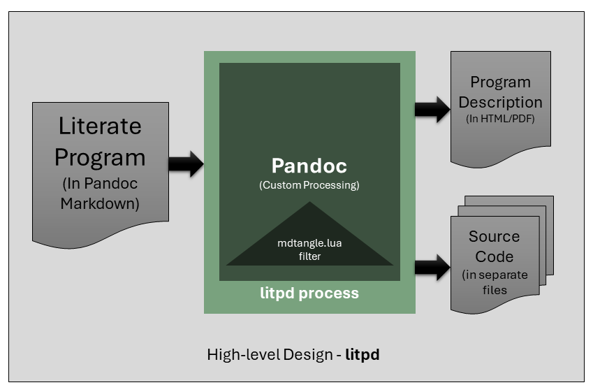

21/03/2024
Revisions
| Version | Date | Comments |
|---|---|---|
| 0.1a-alpha.0 | 21/03/2024 | Initial version |
| 0.1a-alpha.1 | 10/04/2024 | Second alpha release, add code fragments with code_id support. |
| 0.2.0-beta.0 | 18/05/2025 | First beta release, support for powershell and bash scripts and installation procedure documented. |
- Write a program’s code and design in markdown.
- Use litpd to generate the readable and runnable avatars of your program.
- Profit?!!
This document describes a simple literate
programming tool. It is developed for use in my own programming
projects. I use markdown for most documentation, and I use
lua for most of my programming needs these days. This tool
uses pandoc to process a markdown file
to one of the supported printable/publishable outputs supported by
pandoc. The tool also includes a lua filter to process the code blocks
in the literate program document to generate output programs in their
own files.
This tool is itself written as a literate program and can be found at github/litpd
For those unfamiliar to the term “literate programming”, I would refer you to the excellent writings on the topic by Donald Knuth. In short literate programming is about program definition in a document which is written as a work of literature. Therefore one of the primary objectives of a literate program is to be read and enjoyed by another programmer. The literate program document can also be used to create an executable program or a library in the target programming language.
To quickly get started with using the litpd program, follow the instructions to ensure you have the pre-requisites and then install and test the litpd release.
There are two pre-requisites
See the getting started page on the lua website for instructions on how to get started with lua -> Lua: Installation.
Important: Ensure lua is added to the path after installation
See instructions for your platform at the pandoc website -> Installing Pandoc.
Important: Ensure pandoc is added to the path after installation
New-Item -ItemType Directory -Force -Name "litpd"; Set-Location "litpd"; Invoke-WebRequest -Uri "https://github.com/abhishekmishra/litpd/releases/latest/download/litpd.zip" -OutFile "litpd.zip"; Expand-Archive -Path "litpd.zip" -DestinationPath "."mkdir -p litpd && cd litpd && curl -L -o litpd.zip "https://github.com/abhishekmishra/litpd/releases/latest/download/litpd.zip" && unzip litpd.zipIn this section we will run litpd with the sample “Hello World!”
program in the file helloworld.md to generate the html
readable program, and the helloworld runnable programs in various
programming languages.
Open helloworld.md program in your favourite text
editor to see what it looks like.
On Windows we run the litpd program using the powershell script
litpd.ps1.
# Change to the litpd directory
cd litpd
# Run litpd with helloworld.md
./litpd.ps1 helloworld.md# Change to the litpd directory
cd litpd
# Run litpd with helloworld.md
./litpd.ps1 helloworld.mdYou should now see the following files:
program.html: This is the readable/printable version of
the program.helloworld.lua,helloworld.py,etc.: The runnable
programs generated from helloworld.md.The litpd program is written in the Lua programming language. The goal of the program is two-fold:
The program uses pandoc to perform the generation of the final readable document with minor adjustments. Therefore this part of the program simply delegates to pandoc.
To generate the source code in proper files and structure, we inject a lua filter program into the pandoc processing flow. This program extracts the code from the document and writes it to the target program file(s).
The approach is also described in the High-level design diagram below.

As you have seen in the design diagram above, the litpd process uses pandoc to generate both the readable and runnable avatars of the program. The user of litpd interacts with a shell program (for their o/s, powershell on windows and bash on unix-like). This shell program ensures lua and pandoc are available. It then starts up litpd.lua which orchestrates pando and injects it with filter programs codeidextract.lua and mdtangle.lua to get the runnable avatar of the program. Since the input program in already in pandoc markdown format, pandoc can be used trivially to get the readable avatar of the literate program.
Therefore, the litpd application is composed of the following components:
The litpd.lua program provides a command line interface
to the literate programming tool. It allows us to run the pandoc
conversion of the literate program document into the publishable
document and the runnable program using the mdtangle.lua
filter as well as compile the output into proper files at the proper
locations.
The program has the following parts:
We will discuss each part one by one.
This part is self-explanatory and provides the header of the program in standard lua documentation format.
file: litpd.lua--- litpd.lua - Main CLI program for litpd tool.
--
-- license: MIT see LICENSE file
-- date: 21/03/2024
-- author: Abhishek MishraIn this section of the program, we first construct the
args table from the program arguments.
script_path stores the first argument which is
usually the name of the lua program being run, if this is run from a
standard lua executable.script_path contains any windows
\ backslash path separators, we replace them with
/ slashes.\ of the
script_path as the path of the directory containing the
program, and store the result in litmd_home.show_usage which prints the
usage of the command, this is used when the user does not pass the
proper expected arguments to the command.input_file.options.
-- get the arguments from the command line
local args = {...}
-- get the path of script, and its directory
local script_path = arg[0]
-- replace all backslashes with forward slashes
script_path = script_path:gsub("\\", "/")
local litmd_home = script_path:match(".*/")
-- print("litmd_home: " .. litmd_home)
--- Show usage
local function show_usage()
print("Usage: litmd <inputfile.md> [options]")
end
-- if no arguments are provided, print the usage
if #args == 0 then
show_usage()
return
end
-- get the input file name
local input_file = args[1]
if input_file == nil then
print("No input file provided")
show_usage()
return
end
-- get the rest of the arguments
local options = {}
for i = 2, #args do
table.insert(options, args[i])
endIn the next section of the program we now construct the pandoc command to run such that both the output document, and output code are generated correctly.
CODEID_FILTER variable is created to store the path
to the lua pandoc filter which will extract the code from the input
document which are marked with code_id and write it to individual source
code fragment files with the same name.TANGLE_FILTER variable is created to store the path
to the lua pandoc filter which will extract the code from the input
document which are marked with code_file and write it to individual
source code files.PANDOC_CMD variable stores a string which passes
the lua-filter arg and the markdown source type setting to the pandoc
command.cmd from its constituent parts. First the
PANDOC_CMD then the input_file and finally the
rest of the args in the table options are added to the
string cmd.cmd string is displayed on the
terminal.
local CODEID_FILTER= litmd_home .. "codeidextract.lua"
local TANGLE_FILTER = litmd_home .. "mdtangle.lua"
local PANDOC_CMD = "pandoc" .. " --lua-filter=" ..
CODEID_FILTER .. " --lua-filter=" ..
TANGLE_FILTER .. " --from=markdown "
-- create the final command, start with the pandoc command
local cmd = PANDOC_CMD
-- add the input file
cmd = cmd .. input_file
-- add the rest of the options
for i = 1, #options do
cmd = cmd .. " " .. options[i]
end
-- display the command to be executed
print("Executing: " .. cmd)The last few lines of the program run the constructed
cmd string using the io.popen library call.
The call returns a handle to the output, which is stored in
handle. We read the output from this output stream into a
variable called result and then close the
handle.
The result is printed to the terminal. And then the
program is done.
-- execute the command
local handle = io.popen(cmd)
if handle == nil then
print("Error executing command")
return
end
local result = handle:read("*a")
handle:close()
-- handle the result
print(result)The codeidextract.lua program is a pandoc lua filter. A
pandoc filter is a program which is executed by the pandoc program
during its filtration phase. The filter has access to the abstract
syntax tree (AST) of the input document. The access to the AST of the
input document provides the filter program the ability to implement
transformations of the input document, or add functionality to the
document generation process that is not part of the standard pandoc
processing.
The codeidextract.lua filter is interested in the
CodeBlock section of the AST of the input document which have an
attribute named code_id. The value of the attribute
code_id is an identifier for the block of code in the
CodeBlock section of the document.
Once the author of the document creates a code_id CodeBlock he/she can now reference this code_id in another CodeBlock. This allows us to build entire programs from fragments of code in separated CodeBlocks. The document introduces the separate parts of the program according to the flow of the ideas in the document independent of how the source code will finally be placed in the files.
Once the filter identifies a CodeBlock with a code_id, it extracts the code into a separate temporary file assigned to each code_id.
file: codeidextract.lua
local codeidextract = {}
local function get_file_name (code_block)
if code_block.attributes["code_id"] then
return code_block.attributes["code_id"] .. '.tmp'
end
end
local function get_file (code_block)
local full_path = get_file_name(code_block)
if full_path == nil then
return nil, nil
end
local file = io.open(full_path, "w")
return full_path, file
end
local function write_code_block (code_block, file)
local code = code_block.text
file:write(code)
file:write("\n")
end
local function close_file (file)
file:close()
end
function codeidextract.CodeBlock (code_block)
local full_path, file = get_file(code_block)
if full_path == nil then
return
end
print("Extracting code id at " .. full_path)
write_code_block(code_block, file)
close_file(file)
-- create a label for the code block if id exists
local label_text = "id: " .. code_block.attributes["code_id"]
return {
pandoc.Strong(pandoc.Str(label_text)),
code_block
}
end
return {
codeidextract
}The mdtangle.lua program is also a pandoc lua
filter.
The mdtangle.lua filter is only interested in the
CodeBlock section of the AST which represents the code
sections of the input markdown document. The program registers itself to
read all the CodeBlock sections. When a new code block
occurs, the filter program notes down its attribute named
code_file. If such an attribute exists then the code inside
the CodeBlock is written to the file at
code_file in append mode.
Thus the effect of the filter is to take the code blocks from the literate program and write them in their own target files.
Lets now look at the various parts of the program.
--- md-tangle.lua - Lua filter for pandoc to tangle code blocks into one or more
-- files.
--
-- license: MIT see LICENSE file
-- date: 21/03/2024
-- author: Abhishek MishraThe pandoc filter API expects a lua table to be returned from the program. The table should contain entries for each AST node type that the filter intends to process.
We define a table named tangle which will have just one
entry CodeBlock by the end of the program.
tangle will be returned to pandoc as the definition of the
filter module.
local tangle = {}code_file
AttributeAs discussed earlier we have made one addition to the pandoc markdown
format, to support literate programming. Each code block which will be
generated into its own file must specify the output program file name in
the fenced code block. This output program file is specified as the
value of a special attribute code_file of the fenced code
block.
The function get_file_name accepts a
code_block value as argument. This code_block
is received by the CodeBlock handler in our program.
Therefore it is a pandoc object which has an attributes
table.
The function retrieves the code_file value and stores it
in file_name. If there is no code_file defined
for the fenced block, then its value is nil.
The file_name is returned to the caller.
local function get_file_name (code_block)
return code_block.attributes["code_file"]
endThe program defines three functions to perform I/O to the output program file(s).
get_file: Takes the code_block as
argument, and gets the full_path of the file mentioned in
the attributes of the fenced code blcok. The it opens a file in append
node for the given full_path. Both full_path
and file are returned to the caller.write_code_block: This function takes a
code_block and a file already opened to write
it. It writes the content of the code_block followed by a
newline in the file.close_file: closes the given file.
--- check if given path exists
---@param path string
---@return boolean
local function exists(path)
local file = io.open(path, "r")
if file then
file:close()
return true
end
return false
end
--- file contents
--@param path string
--@return string contents
local function file_contents(path)
local file = io.open(path, "r")
local contents = nil
if file then
contents = file:read("*all")
file:close()
end
return contents
end
local function get_file (code_block)
local full_path = get_file_name(code_block)
if full_path == nil then
return nil, nil
end
local file = io.open(full_path, "a")
return full_path, file
end
local function write_code_block (code_block, file)
local code = code_block.text
local code_id_replace = true
while code_id_replace do
local t = {}
local i = 0
local found_code_id = false
while true do
local code_id
i, _, code_id = string.find(code, "@<(%a+)@>", i+1)
if i == nil then break end
table.insert(t,
{
index = i,
code_id = code_id
}
)
found_code_id = true
end
for _, v in ipairs(t) do
print('code id found at ', v.index, ' code_id = ', v.code_id)
local cidfile = v.code_id .. '.tmp'
if exists(cidfile) then
print('file for code_id', v.code_id, 'exists at', cidfile)
local contents = file_contents(cidfile)
-- print(contents)
code = code:gsub("@<" .. v.code_id .. "@>", contents)
end
end
-- repeat the search only if there is a code_id found in current
-- iteration, which means there might be more after replacement
if not found_code_id then
code_id_replace = false
end
end
file:write(code)
-- print(code)
file:write("\n")
end
local function close_file (file)
file:close()
endCodeBlock AST HookThe CodeBlock function in the filter module will be
called by pandoc when it encounters a code block in the input markdown
document. The only argument of the function is code_block
which gets the text of the code written in the fenced code block.
full_path to the
code_block, and the corresponding writable
file object using the get_file function
defined above.full_path is nil, then
there is nothing to do and the method returns.code_block to the
file using the function write_code_block.file using the
close_file function.
function tangle.CodeBlock (code_block)
local full_path, file = get_file(code_block)
if full_path == nil then
return
end
print("Tangling code block at " .. full_path)
write_code_block(code_block, file)
close_file(file)
local label_text = "file: " .. full_path
return {
pandoc.Strong(pandoc.Str(label_text)),
code_block
}
endLastly, we export the module for use in pandoc.
file: mdtangle.lua
return {
tangle
}This is a fairly new program. As I use it in my daily programming workflow, I will make changes.